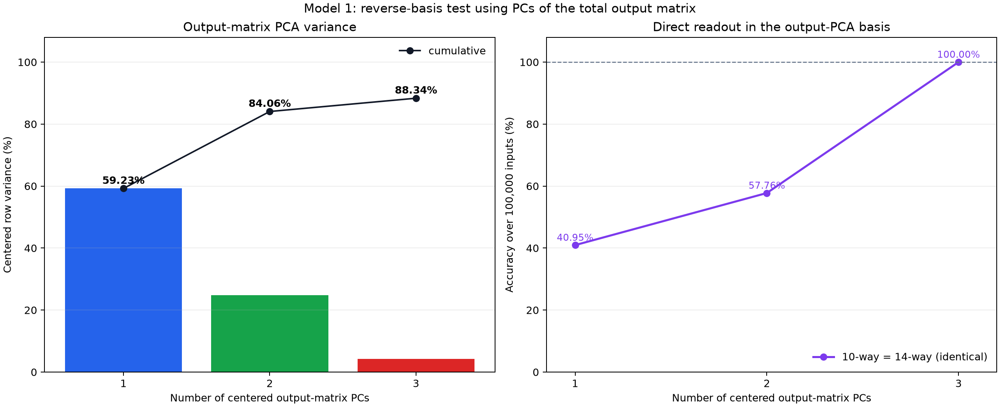
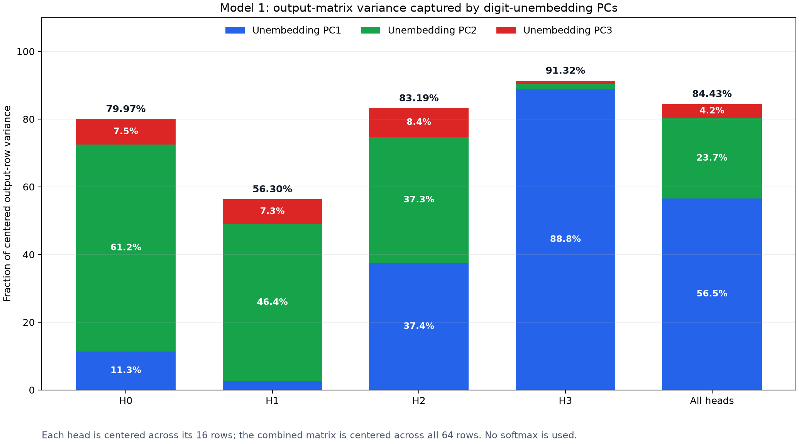
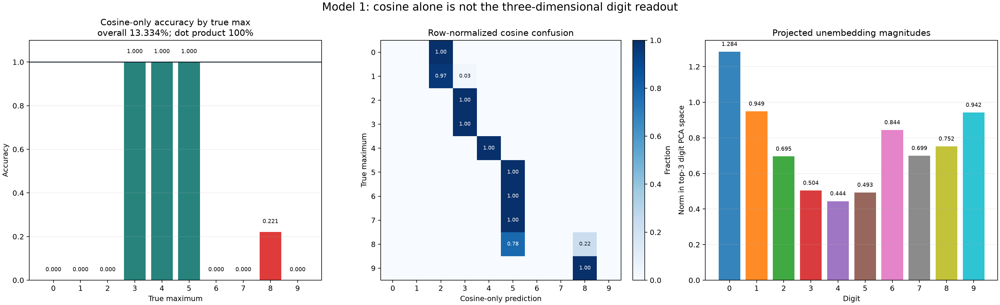
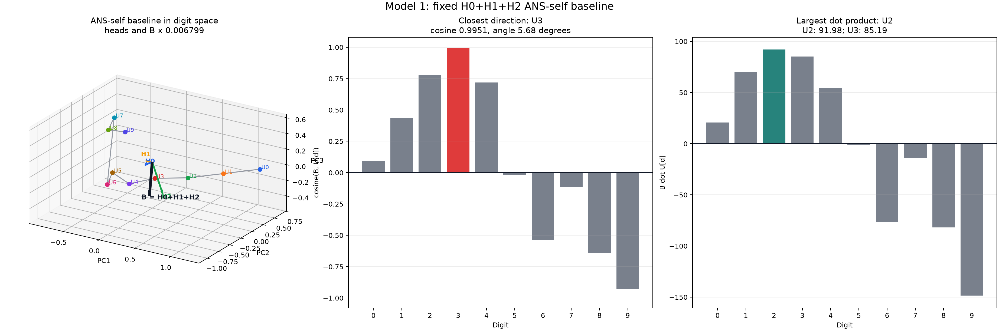

Results - 2026-07-12¶
Model 1: Are The W_O And W_U Top-Three PC Subspaces The Same?¶
Question:
Does the reverse-basis experiment work because the top-three output-matrix PCs and digit-unembedding PCs identify the same residual-stream subspace?
Method:
Fitted the two PCA bases independently after centering rows:
U_digits = model.unembed.weight[0:10] # 10 x 64
O_all = stack(O_0, O_1, O_2, O_3) # 64 x 64
Q_U = top 3 right singular vectors of centered U # 64 x 3
Q_O = top 3 right singular vectors of centered O # 64 x 3
C = Q_U.T @ Q_O # 3 x 3
Each entry C[i,j] is the exact 64d cosine between digit-unembedding PC i
and output-matrix PC j. Output-PC signs were chosen so the same-index
cosines are positive. This resolves the arbitrary sign of PCA directions but
does not change either subspace.
The principal angles between the complete subspaces are:
theta_i = arccos(singular_value_i(C))
If the subspaces were exactly equal, all three singular values would be 1
and all three angles would be 0 degrees.
The union of two distinct 3d subspaces can span up to six dimensions, so six
64d vectors cannot generally be displayed exactly in one 3d scene. The
interactive therefore has two mathematically explicit views:
W_U frame: W_U PCs = I; W_O PCs = coordinates Q_U.T @ Q_O
W_O frame: W_O PCs = I; W_U PCs = coordinates Q_O.T @ Q_U
The selected frame's three PCs are exact unit axes. The other three arrows are
orthogonal projections; a shortened arrow indicates a component outside the
displayed subspace. The adjacent heatmap always shows the exact 64d cosines.
Source:
scripts/analysis/model1_output_unembedding_pc_alignment_interactive.py.
Result:
Open the interactive W_O/W_U PC comparison
Exact values: model1_output_unembedding_pc_alignment.json.
The exact 64d PC cosine matrix is:
| W_O PC1 | W_O PC2 | W_O PC3 | |
|---|---|---|---|
| digit W_U PC1 | 0.9694 | 0.1880 | -0.0225 |
| digit W_U PC2 | -0.1978 | 0.9261 | 0.0294 |
| digit W_U PC3 | 0.0416 | -0.0233 | 0.9741 |
| Quantity | PC1 | PC2 | PC3 |
|---|---|---|---|
| Same-index PC cosine | 0.9694 | 0.9261 | 0.9741 |
| Principal angle between subspaces | 6.94 degrees | 13.49 degrees | 19.04 degrees |
| Digit-W_U variance per PC | 69.47% | 17.04% | 8.75% |
| Output-W_O variance per PC | 59.23% | 24.83% | 4.28% |
The cumulative top-three variance is 95.26% for the centered digit
unembeddings and 88.34% for the centered output matrix.
Interpretation:
The bases are very similar, but not identical. PC3 is almost directly matched,
while PC1 and PC2 include a visible rotation into one another, represented by
the approximately +0.188 and -0.198 off-diagonal cosines. At the subspace
level, even the largest principal angle is only 19.04 degrees.
This strong overlap is likely a major reason the reverse experiment works: both PCA procedures recover nearby parts of residual space containing the digit-readout computation. It is not, by itself, a complete explanation of perfect accuracy. Perfect accuracy additionally says that the differences between these subspaces and the discarded directions never move any tested example across a competing digit's dot-product decision boundary.
Next step:
Decompose actual head-sum writes into the shared principal-vector directions and the subspace-specific remainders. Testing accuracy after removing each part would distinguish the genuinely shared computation from directions that are unique to one PCA basis but behaviorally redundant.
Model 1: Piecewise Writes In The Output-Matrix PCA Basis¶
Question:
How does the same staged head-write mechanism look when its three-dimensional
basis is fitted to the output matrix O_all = W_O.weight.T, rather than to the
digit unembedding matrix?
Method:
Reused the exact full-64d baseline and attention-source corrections from the
earlier unembedding-PCA animation. Only the basis used to display and score
those vectors was changed. The new orthonormal basis is fitted to the centered
rows of the total output matrix:
O_all = stack(O_0, O_1, O_2, O_3) # 64 x 64
O_centered = O_all - mean_rows(O_all)
Q_O = top 3 right singular vectors # 64 x 3
z_h = value_h @ O_h @ Q_O # 1 x 3
U_digit_3d = (U_digits - mean_rows(U_digits)) @ Q_O # 10 x 3
score[d] = sum_h(z_h) dot U_digit_3d[d]
Centering the digit unembeddings subtracts the same scalar from every digit's score, so it cannot change the winning digit. For easier visual comparison, each output-PC axis was sign-flipped when necessary to have positive dot product with the same-index digit-unembedding PC. Axis sign flips do not alter the dot-product bars or predictions.
The staged endpoint recipes are unchanged:
max 0: B + H3([ANS])
max 1: B + H3(actual soft attention row)
max 2-6: B + H3(max)
max 7-8: B + H3(max) + [H2(max) - H2([ANS])]
max 9: B + H3(max) + [H2(max) - H2([ANS])] + [H0(max) - H0([ANS])]
Here B = H0([ANS]) + H1([ANS]) + H2([ANS]). Source:
scripts/analysis/model1_output_pca_piecewise_interactive.py.
Result: interactive comparison
Open the output-matrix-PCA interactive
Open the earlier unembedding-PCA interactive
Exact coordinates and validation: model1_output_pca_piecewise_interactive.json.
The output-derived top-three basis explains 88.34% of the centered output
matrix's row variance. It preserves 100% accuracy over all 100000 actual
inputs, and all ten forced piecewise endpoints also predict their intended
digit. More strongly, the completed-stage winners are identical to those in
the unembedding-derived basis:
0: 2 -> 0 5: 2 -> 5
1: 2 -> 1 6: 2 -> 6
2: 2 -> 2 7: 2 -> 3 -> 7
3: 2 -> 3 8: 2 -> 4 -> 8
4: 2 -> 4 9: 2 -> 4 -> 8 -> 9
The two three-dimensional subspaces are close but not identical. Their
principal angles are 6.94, 13.49, and 19.04 degrees. After the display-only
sign alignment, same-index PC cosines are 0.969, 0.926, and 0.974.
Interpretation:
The visible coordinates and arrow directions change because this is genuinely an output-derived subspace. Nevertheless, the same causal writes cross the same digit decision boundaries in the same order. This supports a shared low-dimensional readout geometry: both the output weights and the digit unembeddings concentrate strongly around nearby three-dimensional residual subspaces that preserve the model's max computation.
This does not show that every use of W_O is three-dimensional. The output
matrix has substantial variance outside these PCs, and the claim here is only
that its top-three centered PCs preserve this task's tested digit argmaxes and
piecewise interventions.
Next step:
Place both interactives in a synchronized side-by-side view so that the same target, stage, and interpolation value can be compared directly across bases.
Model 1: Reverse-Basis Test Using Output-Matrix PCs¶
Question:
If the low-dimensional basis is fitted to the total 64 x 64 output matrix
instead of the unembedding matrix, can the model still perform the complete
max-of-list task using only one, two, or three dimensions?
Method:
Constructed the mathematical row-vector output map by stacking the four per-head maps:
O_all = stack(O_0, O_1, O_2, O_3) # 64 x 64
= stored PyTorch W_O.weight.T
Centered its 64 output-direction rows and fitted PCA:
O_centered = O_all - mean_rows(O_all) # 64 x 64
_, S, Vh = svd(O_centered)
Q_k = Vh[:k].T # 64 x k
The output-row mean is used only to fit the PCA directions. It is not
subtracted from actual head writes and is not added back as an affine term.
Thus the accuracy test uses the pure linear span of the first k centered
output PCs.
For all 100000 inputs, extracted each head's actual post-attention,
pre-W_O value at [ANS] and evaluated the task without constructing a 64d
head output:
O_h_low = O_h @ Q_k # 16 x k
z_h = value_h @ O_h_low # batch x k
z = sum_h z_h # batch x k
U_low = (W_U - mean_rows(W_U)) @ Q_k # vocab x k
logits = z @ U_low.T # batch x vocab
Tested both a digit-only 10-way readout and a full-vocabulary 14-way
readout. Centering W_U only removes a candidate-independent score offset; the
implementation asserted that centered and raw projected unembeddings produce
identical argmaxes. It also asserted that the per-head route above agrees with
full_head_sum @ Q_k to within 9.16e-5.
Repro script:
scripts/analysis/model1_output_pca_readout_accuracy.py.
Result:

Exact values: model1_output_pca_readout_accuracy.json.
| Output PCs retained | Variance contributed by this PC | Cumulative output variance | Digit-only accuracy | Full-vocabulary accuracy | Special-token predictions |
|---|---|---|---|---|---|
| 1 | 59.23% | 59.23% | 40.952% | 40.952% | 0 |
| 2 | 24.83% | 84.06% | 57.758% | 57.758% | 0 |
| 3 | 4.28% | 88.34% | 100.000% | 100.000% | 0 |
The full 64d head-sum baseline is also 100000 / 100000 for both candidate
sets. Accuracy is identical between the 10-way and 14-way projected
readouts at every tested dimensionality.
The errors at lower dimension are structured:
k = 1: only true maxima 0 and 9 are correct
k = 2: maxima 0-6 and 9 are correct
every max-7 input is predicted as 5
every max-8 input is predicted as 6
k = 3: every true maximum 0-9 is correct
Interpretation:
The reverse construction succeeds: the top three PCs of the centered total
output matrix define another 3d residual-stream basis in which the entire
task can be computed. Each 16 x 64 head output map can be pulled back to a
16 x 3 map in this basis, just as it could in the unembedding-PC basis.
Variance magnitude alone does not determine decision relevance. Output PC3
adds only 4.28% of centered output-row variance, but raises accuracy from
57.758% to 100% by restoring the max-7 and max-8 decision regions. This
is another case where a low-variance direction is causally essential for the
argmax computation.
The centered output matrix still has rank 63, so this does not mean W_O is
rank three. It means its leading three centered row-variation directions are
sufficient for this task's projected digit-logit readout. The omitted 11.66%
of static output-row variance is unnecessary for the tested argmaxes.
Next step:
Calculate the principal angles between the three-dimensional output-PCA and digit-unembedding-PCA subspaces. This will show whether both perfect readouts recover nearly the same residual subspace or whether different three-dimensional spaces happen to preserve the same ten decision regions.
Model 1: How Much Output-Matrix Variance Lies In The Unembedding PC Space?¶
Question:
How much centered row variance of the combined 64 x 64 output matrix, and of
each head's 16 x 64 output matrix separately, lies in the top-three
digit-unembedding principal directions?
Method:
Used the same digit-only PCA basis as the low-dimensional mechanism. The ten
digit unembeddings were centered across tokens, and their top three right
singular vectors were collected as orthonormal columns of Q:
U_digits = W_U[0:10, :] # 10 x 64
U_centered = U_digits - mean_rows(U_digits) # 10 x 64
Q = top 3 residual-space PCs # 64 x 3
In row-vector notation, each per-head matrix is O_h: 16 x 64, so
value_h @ O_h is a 1 x 64 residual write. Stacking the four matrices gives:
O_all = stack(O_0, O_1, O_2, O_3) # 64 x 64
= stored PyTorch W_O.weight.T
For each head, centered its 16 rows around that head's own row mean. For the
combined result, centered all 64 stacked rows around one global row mean. With
n = 16 for one head or n = 64 for the combined matrix:
O_c = O - mean_rows(O)
C_O = O_c.T @ O_c / (n - 1) # 64 x 64
fraction_j = q_j.T @ C_O @ q_j / trace(C_O)
top3_fraction = trace(Q.T @ C_O @ Q) / trace(C_O)
= ||O_c @ Q||_F^2 / ||O_c||_F^2
No softmax is used. The implementation also asserted that the covariance,
direct projection-energy, and projected-reconstruction calculations agree.
Repro script:
scripts/analysis/model1_output_variance_in_unembedding_pcs.py.
Result:

Exact values: model1_output_variance_in_unembedding_pcs.json.
Each PC column below is its contribution as a percentage of that matrix's own total centered row variance:
| Output matrix | Total centered variance | PC1 | PC2 | PC3 | Top three | Outside top three |
|---|---|---|---|---|---|---|
H0 O_0 |
1.672285 | 11.34% | 61.15% | 7.48% | 79.97% | 20.03% |
H1 O_1 |
0.822413 | 2.58% | 46.40% | 7.31% | 56.30% | 43.70% |
H2 O_2 |
2.118856 | 37.40% | 37.35% | 8.45% | 83.19% | 16.81% |
H3 O_3 |
5.188508 | 88.82% | 1.57% | 0.93% | 91.32% | 8.68% |
All heads O_all |
2.377940 | 56.55% | 23.70% | 4.19% | 84.43% | 15.57% |
The same three PCs explain 95.26% of the centered digit-unembedding variance.
For the combined output matrix, they capture absolute centered variance
2.007718 out of 2.377940, or 84.43%.
Interpretation:
The high task accuracy after projection is supported by a strong static weight alignment: most of the combined output matrix's centered row variance already lies in the three-dimensional digit-readout subspace. The alignment is also head-specific:
H0: primarily PC2
H1: primarily PC2, but with the weakest total three-PC concentration
H2: almost evenly divided between PC1 and PC2
H3: overwhelmingly PC1
H3's 88.82% concentration in PC1 is consistent with the earlier observation
that its max-0 through max-6 writes form an almost one-dimensional signed
axis. This weight-only result does not by itself show which rows are activated
by actual value vectors, but it shows that H3's available output directions are
already strongly aligned with the leading digit-unembedding direction.
The combined 84.43% is not an average of the four per-head percentages. Each
head is centered using its own mean and normalized by its own variance, whereas
the combined matrix uses one mean and one normalization over all 64 rows.
Next step:
Repeat the same variance-capture calculation on actual post-W_O head outputs
over all 100000 inputs. That activation-weighted analysis will show whether
the model preferentially uses the aligned parts of each O_h, including the
43.70% of H1's static row variance outside this three-dimensional subspace.
Model 1: Piecewise Head Writes From Baseline To Answer¶
Question:
Can the complete attention-routing abstraction be visualized as a fixed low-dimensional baseline plus the head writes recruited for each maximum?
Method:
Used one matched input for each digit, [0, 0, m, 0, 0], and the same top-three
centered digit-unembedding PCA basis as the earlier figures. At the [ANS]
position, each selected 1 x 16 value was mapped through its head's 16 x 64
output slice and then into the common three-dimensional basis:
z_h = value_h @ O_h @ P3.T # 1 x 3
z = sum_h z_h # 1 x 3
relative_logit[d] = z dot U3[d] # scalar
The staged construction starts from the fixed baseline:
B = H0([ANS]) + H1([ANS]) + H2([ANS])
It then applies these exact endpoint recipes:
max 0: B + H3([ANS])
max 1: B + H3(actual soft attention row)
max 2-6: B + H3(max)
max 7-8: B + H3(max) + [H2(max) - H2([ANS])]
max 9: B + H3(max) + [H2(max) - H2([ANS])] + [H0(max) - H0([ANS])]
The subtraction terms are replacement bookkeeping, not extra negative heads.
B already contains H2([ANS]) and H0([ANS]), so changing either source to
the maximum requires adding Hh(max) - Hh([ANS]). The animation labels these
operations directly as H2: [ANS] -> max and H0: [ANS] -> max.
For max 1, H3 uses the measured attention row rather than one-hot attention:
62.2429% [ANS] + 37.6557% 1@5 + 0.1014% other positions
All intermediate B + lambda*x frames are explanatory linear interpolations.
Only the lambda=1 endpoints are claimed as exact attention interventions.
The arrows use one common positive display scale; the live bars show the raw,
unscaled z dot U3[d] values.
Source:
scripts/analysis/model1_piecewise_write_animation.py.
Result: video
Result: interactive version
Open the rotatable staged animation
Download the self-contained interactive HTML file
Exact values and validation: model1_piecewise_write_animation.json.
The right-hand readout changes winners at the exact stages below:
| Intended max | 3D winner after B and each completed write |
|---|---|
| 0 | 2 -> 0 |
| 1 | 2 -> 1 |
| 2 | 2 -> 2 |
| 3 | 2 -> 3 |
| 4 | 2 -> 4 |
| 5 | 2 -> 5 |
| 6 | 2 -> 6 |
| 7 | 2 -> 3 -> 7 |
| 8 | 2 -> 4 -> 8 |
| 9 | 2 -> 4 -> 8 -> 9 |
Every final recipe predicts its intended digit in all three checks:
top-3 digit-PCA head-sum readout: 10 / 10
full 64D head-sum readout: 10 / 10
actual model on matched inputs: 10 / 10
Interpretation:
This makes the piecewise mechanism concrete. B begins in digit 2's linear
decision cell. H3 supplies the main low-to-middle digit write. For maxima 7
and 8, H3 alone leaves the state in cells 3 and 4; replacing H2's
[ANS] source with the maximum supplies the correction that crosses into cells
7 and 8. For max 9, the H2 replacement first reaches cell 8, and the H0
replacement supplies the final boundary crossing to cell 9.
The recruited heads therefore do not need to make the sum nearest to the target by cosine. They need to change the ten dot products enough that the target's linear score becomes largest.
Next step:
Draw the relevant pairwise decision planes for the high-digit stages, especially
3 -> 7, 4 -> 8, and 8 -> 9, and measure each correction's signed distance
across the boundary.
Model 1: Interactive Max-3 And Max-4 Geometry¶
Question:
Does the rotatable three-dimensional geometry confirm that the max-3 sum is
closer to U3 than U4, and that the max-4 sum is closer to U4 than U5?
Method:
Reused the exact piecewise one-hot vectors recorded on 2026-07-11:
input: [0, 0, max, 0, 0]
H0/H1/H2 -> [ANS] self one-hot
H3 -> unique maximum at position 5 one-hot
The Plotly artifact contains independent max-3 and max-4 scenes. It uses
equal data-unit scaling on PC1, PC2, and PC3 so that rotation does not introduce
unequal-axis distortion. H0-H3 and SUM use the same positive display factor
0.00317793; unembedding vectors are unscaled. Hovering over an unembedding
shows its norm, cosine, spatial angle, and dot product with SUM.
Source:
scripts/analysis/model1_max34_interactive_geometry.py.
Result:
Open the standalone interactive plot
Download the self-contained HTML file
Numerical confirmation:
| Case | Candidate | Cosine with SUM |
Spatial angle | Dot product |
|---|---|---|---|---|
| max 3 | U3 | 0.924051 | 22.474 degrees | 73.05498 |
| max 3 | U4 | 0.872934 | 29.199 degrees | 60.84348 |
| max 4 | U4 | 0.950897 | 18.029 degrees | 70.04760 |
| max 4 | U5 | 0.658965 | 48.779 degrees | 53.87319 |
Interpretation:
There is no unembedding-index error. In both cases, the correct digit is closest by cosine and also wins by dot product. The misleading static view came from flattening a three-dimensional scene into a fixed two-dimensional camera view, compounded by the static plot's unequal box aspect.
Next step:
Use the interactive format for max 7-9, where H2 and H0 recruitment adds new
head directions and makes static-camera interpretation more difficult.
Model 1: How Much Does Cosine Determine The 3D Readout?¶
Question:
Across all 100000 inputs, is the correct digit the unembedding vector most
closely aligned by cosine with the summed four-head output in the top-three
digit-unembedding PCA space?
Method:
For every input, computed the actual four-head sum at [ANS], then projected
both it and the ten centered digit unembeddings into the same digit-only PCA
basis:
z = head_sum @ P3.T # batch x 3
U3[d] = (W_U[d] - mean(W_U[0:10])) @ P3.T # 3
dot_score[d] = z dot U3[d]
cosine_score[d] = cosine(z, U3[d])
weighted_score[d] = ||U3[d]|| * cosine(z, U3[d])
Because ||z|| is common to every candidate digit for one input,
weighted_score must have the same argmax as dot_score. Tested that identity
numerically as well as comparing the pure cosine argmax with the true maximum.
Repro script:
scripts/analysis/model1_lowdim_cosine_readout.py.
Result:

Exact values: model1_lowdim_cosine_readout.json.
Overall results:
3D dot-product accuracy: 100000 / 100000 = 100.000%
3D norm-weighted cosine accuracy: 100000 / 100000 = 100.000%
3D cosine-only accuracy: 13334 / 100000 = 13.334%
macro cosine-only accuracy by max: 32.207%
dot vs norm-weighted mismatches: 0
| True max | Count | Dot-product accuracy | Cosine-only accuracy | Cosine-only predictions |
|---|---|---|---|---|
| 0 | 1 | 1.000 | 0.000 | 2: 1 |
| 1 | 31 | 1.000 | 0.000 | 2: 30, 3: 1 |
| 2 | 211 | 1.000 | 0.000 | 3: 211 |
| 3 | 781 | 1.000 | 1.000 | 3: 781 |
| 4 | 2101 | 1.000 | 1.000 | 4: 2101 |
| 5 | 4651 | 1.000 | 1.000 | 5: 4651 |
| 6 | 9031 | 1.000 | 0.000 | 5: 9031 |
| 7 | 15961 | 1.000 | 0.000 | 5: 15961 |
| 8 | 26281 | 1.000 | 0.221 | 5: 20480, 8: 5801 |
| 9 | 40951 | 1.000 | 0.000 | 8: 40951 |
Cosine alone therefore identifies the answer for every input only when the
true maximum is 3, 4, or 5, and for 22.1% of max-8 inputs. It fails
for every input in the other six true-max groups.
Confirming The Max-0 Norm Effect¶
The single max-0 input gives:
| Digit | Cosine with z |
||U3[d]|| |
Dot product |
|---|---|---|---|
| 0 | 0.721753 | 1.284165 | 336.63205 |
| 1 | 0.918481 | 0.948663 | 316.46655 |
| 2 | 0.998083 | 0.695354 | 252.06847 |
Thus pure cosine predicts 2, not 0. Digit 0 wins because its projected
unembedding norm is sufficiently larger. This confirms that the max-0
readout depends critically on unembedding magnitude, not only alignment.
Interpretation:
The three-dimensional bottleneck is sufficient, but it is not an angular nearest-neighbor classifier. The actual decision rule is:
argmax_d ||U3[d]|| * cosine(z, U3[d])
The norm of z itself cannot affect the winning digit, but the ten projected
unembedding norms are unequal, ranging from about 0.444 for U4 to 1.284
for U0. Those radii move the linear decision boundaries substantially.
Cosine provides part of the code: it is sufficient in the middle range
3-5, and sometimes for 8. Across the complete task, however, unembedding
magnitude is indispensable. The low-dimensional computation should therefore
be understood as a structured dot-product readout over a curved, unequal-radius
set of digit vectors.
Next step:
For every failure group, decompose the boundary between the true digit and the
cosine-selected digit into its angular and unembedding-norm terms. This should
show exactly how much radial scale is needed to rescue 0, 1, 2, 6, 7,
8, and 9.
Model 1: Mechanism Synthesis And Interactive Digit Geometry¶
Question:
What mechanism is supported jointly by the attention-routing results, the three-dimensional output bottleneck, and the failure of cosine-only decoding?
Current mechanism:
For each head, attention first selects or mixes source values. The digit-PCA basis can then be pulled backward through that head's output matrix:
value_h = attention_h[ANS, :] @ V_h # 1 x 16
O_h_low = O_h @ P3.T # 16 x 3
z_h = value_h @ O_h_low # 1 x 3
z = z_0 + z_1 + z_2 + z_3 # 1 x 3
relative_logit[d] = z dot U3[d] # scalar
Here P3 contains the top three centered digit-unembedding directions and
U3[d] = (W_U[d] - mean(W_U[0:10])) @ P3.T.
The same PCA basis is therefore useful on both sides of the readout, but this
needs precise wording. It does not show that each raw O_h is rank three or
that every head output has all of its 64d energy in this space. It shows that
the head-output components relevant for distinguishing digit logits can be
compressed through O_h_low while retaining 100% task accuracy.
The routing and write mechanism currently looks like:
H0/H1/H2 self-reads establish a default baseline.
H3 supplies an almost one-dimensional signed write for maxima 0-6.
H2 is routed to high-number sources for maxima 7-9.
H0 is additionally routed to the maximum for max 9.
H1 remains a stable [ANS] self-reader.
The recruited heads should not be described as simply rotating z toward the
correct unembedding by cosine. Their causal role is to move z across the
dot-product decision boundaries:
digit t beats digit j iff (U3[t] - U3[j]) dot z > 0
Because the U3[d] vectors have unequal radii, crossing these boundaries can
happen without making U3[t] the nearest vector by angle.
Result: interactive unembedding geometry
Open all ten digit unembeddings in interactive 3D
Download the self-contained digit-unembedding HTML file
The vectors are centered digit unembeddings in the exact PCA orientation used
by the earlier head-write figures. The connected path shows digit order
0 -> 9; every vector starts at the residual-stream origin. Equal data-unit
scaling is used, and hovering reports each coordinate and radius.
Interpretation:
The interactive view makes the readout geometry explicit: the digit vectors form a curved path with substantially unequal lengths. The head circuit writes a low-dimensional state into this geometry, and the unembedding performs a linear multiclass classification by dot product. Attention recruitment is best understood as adding head-specific correction vectors that place the final sum inside the desired digit's dot-product cell, rather than forcing nearest-cosine alignment.
Next step:
Project the max-7, max-8, and max-9 H2/H0 recruitment deltas into this
same interactive scene and draw the relevant pairwise decision planes. That
would show exactly which boundary each additional head crosses.
Model 1: The Fixed H0+H1+H2 ANS-Self Baseline¶
Question:
If H0, H1, and H2 each read [ANS] with a one-hot final attention row while
H3 is omitted, where does their summed output land in the three-dimensional
digit-unembedding space?
Method:
For each head h = 0,1,2, used the [ANS] residual at sequence position 10
as its sole value source, then applied that head's own value and output maps:
value_h = residual[ANS] @ W_V_h.T # 1 x 16
Hh = value_h @ O_h @ P3.T # 1 x 3
B = H0 + H1 + H2 # 1 x 3
Here P3 is the same centered digit-unembedding PCA basis used in all previous
low-dimensional plots. H3 is not included. Repro script:
scripts/analysis/model1_h012_ans_baseline_geometry.py.
Result:

Open the rotatable baseline overlay
Download the self-contained baseline HTML file
Exact values: model1_h012_ans_baseline_geometry.json.
The projected writes are:
| Component | PC1 | PC2 | PC3 |
|---|---|---|---|
H0 [ANS] self |
+28.292 | -67.724 | +23.732 |
H1 [ANS] self |
-0.168 | -20.648 | +8.118 |
H2 [ANS] self |
+57.803 | -58.235 | -27.442 |
| B = H0+H1+H2 | +85.927 | -146.606 | +4.408 |
The baseline is almost exactly directed toward U3, but dot product selects
U2:
| Candidate | Cosine with B |
Spatial angle | ||U3[d]|| |
Dot product |
|---|---|---|---|---|
| U2 | 0.778183 | 38.906 degrees | 0.695355 | 91.98342 |
| U3 | 0.995091 | 5.680 degrees | 0.503619 | 85.18961 |
Therefore:
nearest by cosine: U3
largest dot product: U2
Interpretation:
H0+H1+H2 do not by themselves encode the default answer 0. Their fixed
baseline lies in digit 2's dot-product decision cell, despite pointing almost
directly toward U3. The norm difference between U2 and U3 changes the
winner.
This sharpens the H3 mechanism for maxima 0-6. Starting from the fixed
baseline B, H3 adds an almost one-dimensional signed write:
final z(max) = B + H3_write(max)
A large positive H3 self-write moves the result to 0; the max-1 soft mix
produces an intermediate positive write; the max-2 read is near zero; and
max-3 through max-6 produce increasingly negative writes. The resulting
line crosses the successive dot-product cells for digits 0-6.
Next step:
Plot the scalar coefficient of H3 along its common axis against digit value and
calculate the exact intersections of B + alpha * H3_axis with each pairwise
digit decision plane. This would turn the visual 0-6 trajectory into an
explicit one-dimensional threshold model.